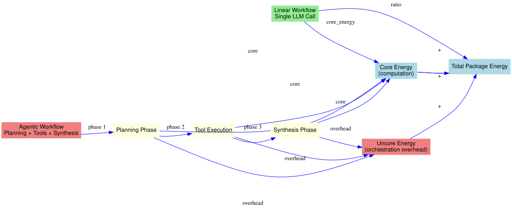

Orchestration Tax Framework¶
This document presents the Orchestration Overhead Index (OOI) framework for quantifying agentic AI overhead.
🎯 Core Concept¶
The orchestration tax is the additional energy consumed by agentic workflows compared to linear execution of the same task.
Linear: [LLM Call] → Answer
Agentic: [Plan] → [Tool] → [Reason] → [Tool] → [Synthesize] → Answer
↑
Orchestration Tax (overhead)
📊 Orchestration Tax Visualization¶
The diagram below shows the energy difference between linear and agentic workflows:

📈 Mathematical Definition¶
Basic Tax¶
\[T_{basic} = \frac{E_{agentic}}{E_{linear}}\]
Tax Percentage¶
\[T_{\%} = \frac{E_{agentic} - E_{linear}}{E_{agentic}} \times 100\%\]
🔬 Uncore Attribution Proof¶
From first principles:
\[
\begin{aligned}
E_{total} &= E_{core} + E_{uncore} \\
E_{idle} &= E_{idle,core} + E_{idle,uncore} \\
E_{workload} &= (E_{core} - E_{idle,core}) + (E_{uncore} - E_{idle,uncore}) \\
E_{reasoning} &= E_{core} - E_{idle,core} \\
E_{tax} &= E_{uncore} - E_{idle,uncore}
\end{aligned}
\]
Therefore: Orchestration tax equals uncore energy minus idle uncore energy.
🧠 Phase-Level Attribution¶
Phase Energy Decomposition¶
\[E_{agentic} = E_{planning} + E_{execution} + E_{synthesis}\]
Phase Tax Contribution¶
\[T_{phase} = \frac{E_{phase} - E_{phase,linear}}{E_{agentic}} \times 100\%\]
Where \(E_{phase,linear}\) is the energy the linear workflow would have spent on equivalent computation.
📊 Orchestration Overhead Index (OOI)¶
Definition¶
\[OOI = \frac{E_{agentic}}{E_{linear}} \cdot \left(1 + \frac{t_{planning} + t_{synthesis}}{t_{execution}}\right)\]
Components¶
| Component | Description | Weight |
|---|---|---|
| \(\frac{E_{agentic}}{E_{linear}}\) | Energy multiplier | Primary |
| \(t_{planning}\) | Planning time | Overhead |
| \(t_{synthesis}\) | Synthesis time | Overhead |
| \(t_{execution}\) | Tool execution time | Baseline |
Interpretation¶
| OOI Range | Interpretation |
|---|---|
| 1.0 - 1.5 | Low overhead |
| 1.5 - 3.0 | Moderate overhead |
| 3.0 - 5.0 | High overhead |
| > 5.0 | Extreme overhead |
🔄 Workflow Phase Analysis¶
Phase Definitions¶
Planning Phase
↓
Execution Phase (Step 1)
↓
Execution Phase (Step 2)
↓
...
↓
Execution Phase (Step n)
↓
Synthesis Phase
Phase Energy¶
\[E_{planning} = \int_{t_0}^{t_1} P(t) dt\]
\[E_{execution} = \sum_{i=1}^{n} \int_{t_{i,start}}^{t_{i,end}} P(t) dt\]
\[E_{synthesis} = \int_{t_n}^{t_{final}} P(t) dt\]
📊 Tax Distribution Analysis¶
Per-Step Tax¶
\[T_{step} = \frac{E_{step} - E_{step,linear}}{E_{total}} \times 100\%\]
Cumulative Tax¶
\[T_{cumulative}(k) = \sum_{i=1}^{k} T_{step,i}\]
🎯 Reasoning-to-Waste Ratio¶
Definition¶
\[RWR = \frac{E_{reasoning}}{E_{waste}}\]
Where: - \(E_{reasoning}\) = Energy spent on actual computation - \(E_{waste}\) = Energy spent on idle/waiting (\(= E_{tax}\))
Interpretation¶
| RWR | Meaning |
|---|---|
| > 1.0 | More reasoning than waste |
| 0.5 - 1.0 | Balanced |
| < 0.5 | More waste than reasoning |
⏱️ Wait-Tax Analysis¶
Wait State Energy¶
\[E_{wait} = \sum_{i} P_{idle} \cdot t_{wait,i}\]
Wait-Tax Ratio¶
\[WTR = \frac{E_{wait}}{E_{tax}}\]
Network vs Local Wait¶
\[E_{wait,network} = \sum_{api\ calls} P_{idle} \cdot t_{api}\]
\[E_{wait,local} = E_{wait} - E_{wait,network}\]
🔧 Tool-Specific Tax¶
Tool Execution Tax¶
\[T_{tool} = \frac{E_{tool} - E_{tool,linear}}{E_{agentic}} \times 100\%\]
Tool Overhead Factor¶
\[TOF = \frac{E_{tool}}{E_{computation}}\]
📈 Statistical Framework¶
Tax Distribution¶
\[T_{agentic} \sim \mathcal{N}(\mu_{tax}, \sigma_{tax}^2)\]
Confidence Intervals¶
\[CI_{tax} = \bar{T}_{tax} \pm t_{n-1,0.975} \cdot \frac{s_{tax}}{\sqrt{n}}\]
Hypothesis Testing¶
\[H_0: \mu_{agentic} \leq \mu_{linear}$$
$$H_1: \mu_{agentic} > \mu_{linear}\]
Test statistic:
\[t = \frac{\bar{x}_{agentic} - \bar{x}_{linear}}{\sqrt{\frac{s_{agentic}^2}{n_{agentic}} + \frac{s_{linear}^2}{n_{linear}}}}\]
🔬 Research Applications¶
Cross-Model Comparison¶
Compare tax across different LLMs:
\[T_{model} = \frac{E_{agentic,model}}{E_{linear,model}}\]
Cross-Provider Analysis¶
\[T_{provider} = \frac{E_{agentic,provider}}{E_{linear,provider}}\]
Complexity Scaling¶
\[T(c) = \alpha \cdot c^\beta\]
Where \(c\) is task complexity level (1-3).
📚 Example Results¶
GSM8K Arithmetic (Level 1)¶
Linear: 1.2 J
Agentic: 2.6 J
Tax: 2.2x (120% overhead)
OOI: 2.8
Phase Breakdown:
Planning: 0.8 J (31%)
Execution: 1.2 J (46%)
Synthesis: 0.6 J (23%)
Multi-Step Arithmetic (Level 2)¶
Linear: 0.9 J
Agentic: 2.4 J
Tax: 2.7x (170% overhead)
OOI: 3.4
Phase Breakdown:
Planning: 0.7 J (29%)
Execution: 1.3 J (54%)
Synthesis: 0.4 J (17%)
📊 Visualization¶
Tax Distribution by Task
━━━━━━━━━━━━━━━━━━━━━━━━━━━━━━━━━━━━━━━━━━━━━━━━━━━
GSM8K Basic │██████████░░░░ 2.2x
GSM8K Multi-Step │████████████░░ 2.7x
Logical Reasoning│██████████████ 3.1x
Factual QA │██████░░░░░░░░ 1.5x
Science QA │████████░░░░░░ 2.0x
────────────────────────────────────────────────────
0x 1x 2x 3x 4x
📚 References¶
- Schwartz, R., et al. (2020). "Green AI"
- Patterson, D., et al. (2021). "Carbon Emissions and Large Neural Network Training"
- Strubell, E., et al. (2019). "Energy and Policy Considerations for Deep Learning in NLP"